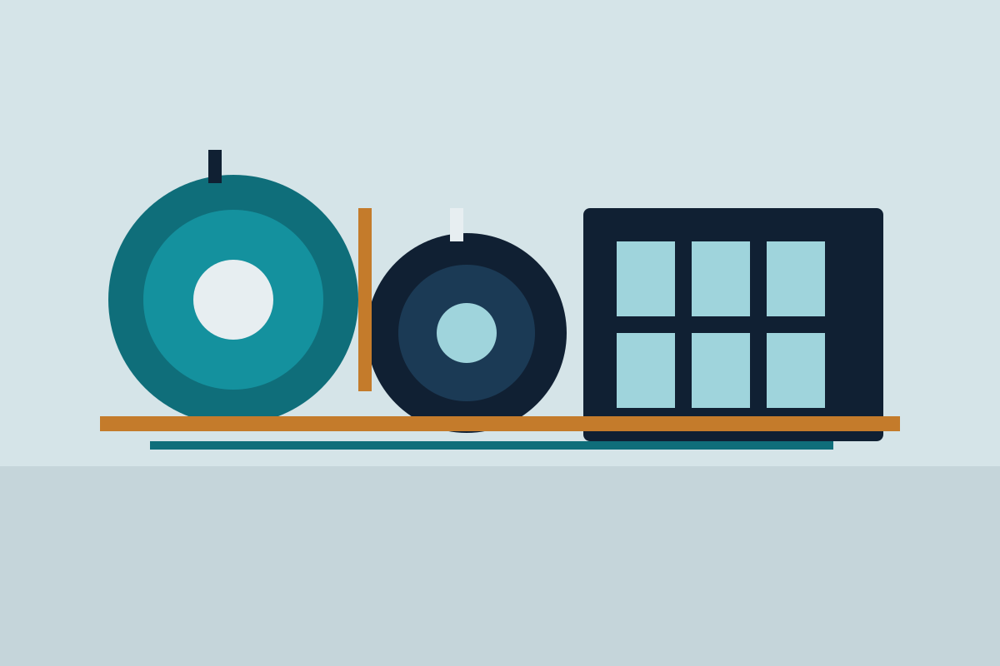
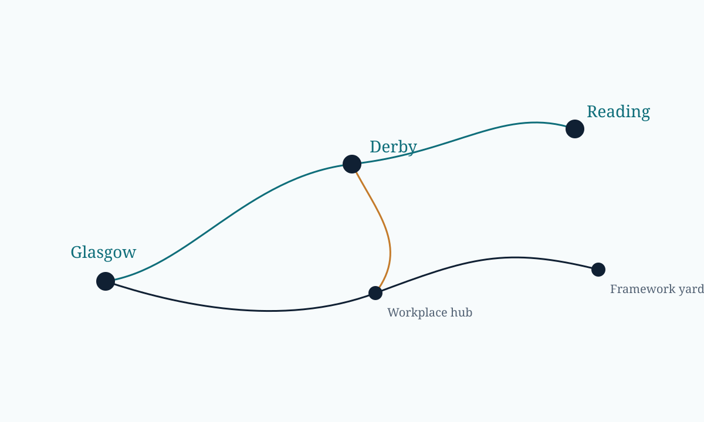

01 · Spring
Envelope volume
Building Systems added £28.4 million of revenue, mostly from UK facade frameworks priced in 2024 and built in 2025.
Advanced package · Interactive digital report · £5,500 · 3 weeks
Annual report 2025 · Overview
Revenue rose to £842.6 million. Building Systems carried the volume, Water Infrastructure filled its frameworks, and Workplace Services absorbed the sale of the Sheffield depot without losing its margin.

Scroll
01 · Spring
Building Systems added £28.4 million of revenue, mostly from UK facade frameworks priced in 2024 and built in 2025.
02 · Summer
The Reading yard carried a river-intake outage and two new framework lots. Water revenue finished at £267.8 million.
03 · Autumn
Closing Sheffield removed £16.8 million of revenue and a £4.2 million exceptional cost. The remaining book still grew.
£412.4m revenue · order book £510m. Facades, roofing and envelopes, led from Derby.
£267.8m revenue. Treatment packages and network frameworks, with the main yard at Reading.
£162.4m revenue. Fit-out and maintenance. Glasgow is the largest remaining hub after Sheffield.

The interactive report is the public reading copy. The PDF issued with the notice of meeting carries the audited statements, the remuneration report and the principal risks.